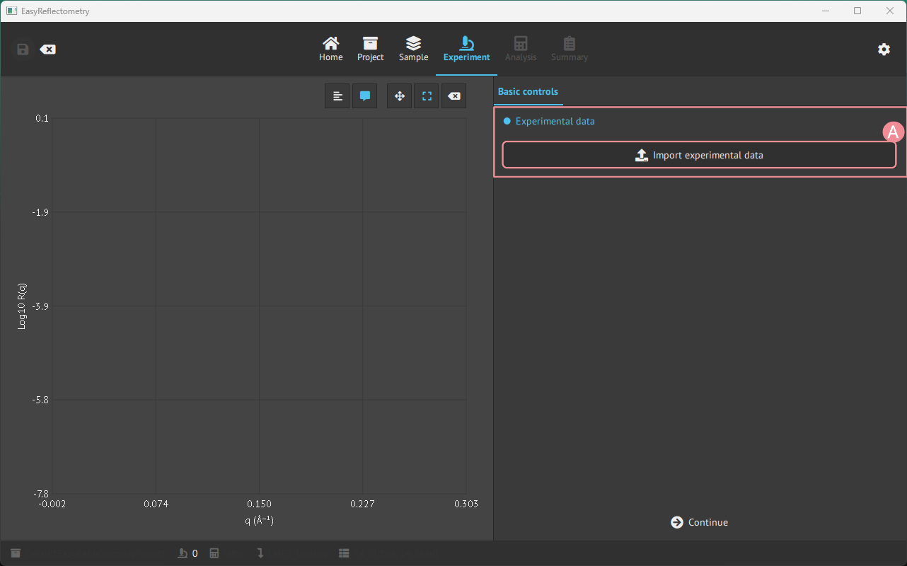
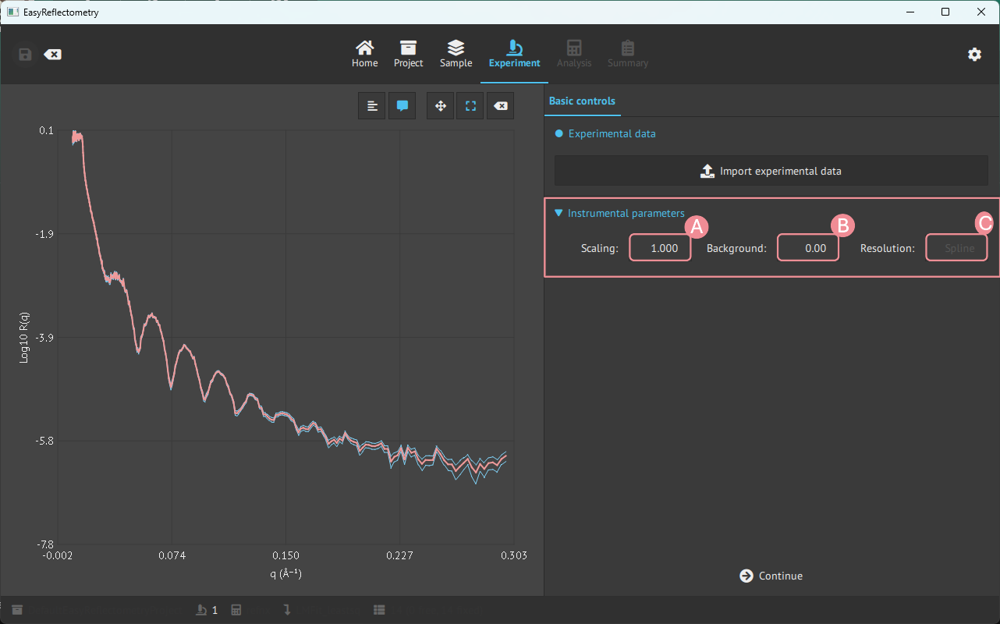

Loading experimental data#
Load data#
Experimental data must be .dat, .txt, or .ort to be loaded into the EasyReflectometryApp.
Data is loaded in the Experimental page, by pressing the Import experimental data.

A: Open your file manager to load data in the mentioned format.
Instrumental parameters#
When data is loaded, it is possible to change instrumental parameters that affect the data.

A: Scale the data by the given value.
B: Set the level where data merges into the experimental background.
C: Instrumental resolution that percentage varies as a function of Q.
Resolution of the data#
A file with a fourth column (sQz, the q-resolution of each point) keeps that resolution:
the fit, the calculated curve and residuals on the Analysis page, the Bayesian sampling
and band, and the report all smear each dataset with the resolution it was measured with.
This holds for every dataset, also when several datasets share one model (other angles,
other contrasts) and for each channel of a polarised experiment.
The resolution field above (C) belongs to the model. It is taken from the first dataset
loaded onto the model (it shows Spline for a measured resolution), and it is used for
simulations on the Sample page and for datasets without a resolution column, which are
smeared with the model’s percentage.
Several files of one contrast#
A contrast is often measured as several curves, one per incident angle or wavelength band.
Load the first file, keep its experiment selected, and press
Add file(s) to the selected experiment to merge the others into it. The points are
sorted by q and every point keeps its own resolution, so overlapping q ranges measured
with different widths are fitted correctly. A file without a resolution column added to
measured ones is given the model’s percentage resolution (5 % when the model holds a
measured one), and the app says so. The button is disabled for a polarised experiment,
whose channels are separate datasets.
Polarised data#
A measurement that recorded several spin channels is loaded with the second button,
Load polarized experiment (file per channel), which takes one file per channel and asks
how to assign them. See polarised data.